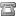
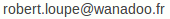

Contact, Tarifs et Plan d'accès
Pascale et Robert Loupe
La combe
42920 Chalmazel
 04 77 24 88 23
06 80 12 46 50

Voir les tarifs et les disponibilités sur le site de Gîtes de France
À environ 1h15 de Saint-Étienne et de Clermont-Ferrand
N45° 43.028 E003° 50.738